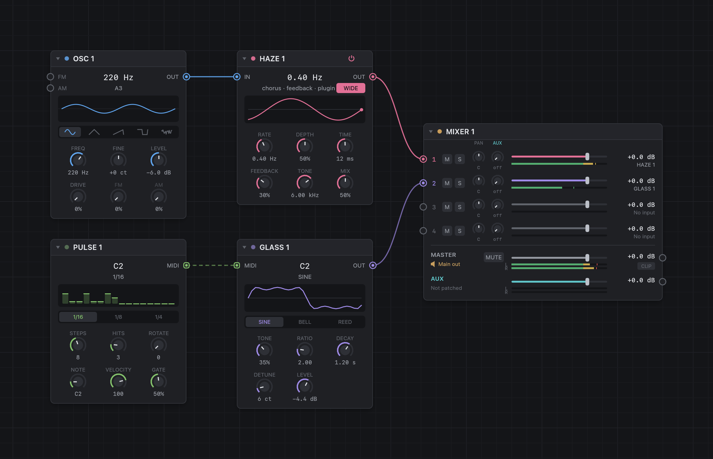
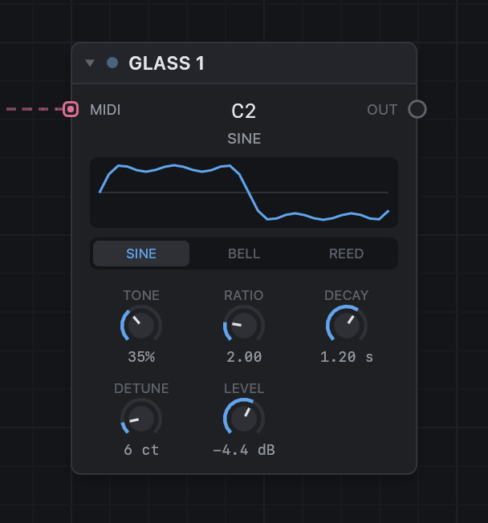

01Plugin nodes
A node plugin is a dynamic library (.dylib on macOS, .so on Linux, .dll on Windows) holding one or more nodes written against audioboard-node, the node SDK. Put it in AudioBoard's Nodes folder and press Rescan: its nodes appear under Plugin nodes in the palette and the right-click menu, by maker, and from there on they are nodes like the built-in ones: audio and MIDI cables, knobs a MIDI CC node can map, presets, bypass, modules, the library. A project saves them by a stable id, with their settings by name.

The repository is a Cargo workspace with the SDK and an example beside the app:
The SDK has no dependencies, and a plugin needs nothing else: no egui, nothing of the app. You need Rust 1.88 or newer and, to build for a given computer, its operating system and processor architecture.
02Create the crate
Inside the AudioBoard checkout, the simplest while learning: every folder in plugins/ is a member of the workspace. Or anywhere else, as a crate of its own.
$ cargo new --lib plugins/tremolo$ cargo new --lib tremoloMake it a dynamic library and add the SDK, in its Cargo.toml:
[package]
name = "tremolo"
version = "0.1.0"
edition = "2024"
# A C-compatible dynamic library: libtremolo.dylib, libtremolo.so or tremolo.dll.
[lib]
crate-type = ["cdylib"]
[dependencies]
# Inside the checkout:
audioboard-node = { path = "../../crates/audioboard-node" }
# Elsewhere, a path to the checkout instead:
# audioboard-node = { path = "/path/to/AudioBoard/crates/audioboard-node" }
# or the repository:
# audioboard-node = { git = "https://github.com/mbonati/AudioBoard" }The package name gives the file name: tremolo builds libtremolo.dylib, and my-nodes builds libmy_nodes.dylib. A crate outside the workspace may add a [profile.release] (lto = true makes it smaller and a little faster); inside, profiles come from the root. Never set panic = "abort": AudioBoard relies on catching a node's panic.
03Write the node
Tremolo turns its input's volume up and down with an LFO: two knobs (RATE, DEPTH), a mode selector for the LFO's shape, a STEREO switch that moves the two channels in opposition, and a display tracing the LFO. This is all of src/lib.rs:
//! Tremolo: an AudioBoard node plugin (the walkthrough in plugins/README.md).
use audioboard_node::prelude::*;
// Knob indexes, in the order of PARAMS.
const RATE: usize = 0;
const DEPTH: usize = 1;
const PARAMS: &[ParamSpec] = &[
ParamSpec::log("RATE", 0.1, 20.0, 4.0, Unit::Hz),
ParamSpec::lin("DEPTH", 0.0, 1.0, 0.6, Unit::Percent),
];
/// The LFO's shapes: the mode selector.
const SHAPES: &[&str] = &["SINE", "TRIANGLE"];
pub struct Tremolo {
params: Shared,
sample_rate: f32,
/// The LFO's phase, in turns (0…1).
phase: f32,
depth: Smoothed,
}
impl Node for Tremolo {
const DESCRIPTOR: Descriptor = Descriptor {
id: "com.example.tremolo",
maker: "Example",
def: NodeDef {
name: "Tremolo",
prefix: "TREM",
hint: "volume wobble",
inputs: &["IN"],
outputs: &["OUT"],
params: PARAMS,
modes: SHAPES,
toggle: Some("STEREO"),
display_h: 40.0,
viz: 1,
..NodeDef::EMPTY
},
panel: Panel { display: Display::Trace { index: 0 }, readout: Readout::Param(RATE) },
};
fn new(init: &Init) -> Self {
Tremolo {
params: init.params,
sample_rate: init.sample_rate,
phase: 0.0,
depth: Smoothed::new(init.params.get(DEPTH)),
}
}
fn process(&mut self, ctx: &ProcessCtx, io: &mut Io<'_>) {
let n = io.frames();
let p = self.params;
let step = p.get(RATE) / self.sample_rate;
let shape = p.mode();
// STEREO: the right channel's LFO half a turn behind the left's.
let offset = if p.toggled() { 0.5 } else { 0.0 };
let depth = p.get(DEPTH);
let (input, out) = io.through(0, 0);
for i in 0..n {
let d = self.depth.next(depth, ctx.smooth);
for c in 0..2 {
let lfo = wave(shape, self.phase + offset * c as f32);
let gain = 1.0 - d * (0.5 - 0.5 * lfo);
out[c][i] = input.map_or(0.0, |b| b[c][i]) * gain;
}
self.phase = (self.phase + step).fract();
}
// For the display: the LFO now.
p.set_viz(0, wave(shape, self.phase));
}
}
/// The LFO, −1…1, at a phase in turns.
fn wave(shape: usize, t: f32) -> f32 {
match shape {
1 => 1.0 - 4.0 * (t.fract() - 0.5).abs(),
_ => fastmath::sin_turns(t),
}
}
audioboard_node::export_nodes! {
name: "Tremolo",
maker: "Example",
version: env!("CARGO_PKG_VERSION"),
nodes: [Tremolo],
}What each part does
DESCRIPTORis everything AudioBoard knows before the node runs. Theidis unique and stable forever: projects find the node by it, so pick a reverse-DNS name you own and never change it. Themakergroups it in the palette.NodeDef:name(in menus),prefix(titles: “TREM 1”),hint, the audioinputsandoutputs(each a stereo cable),params,modes,toggle,display_h(the display's height; 0 hides it) andviz(how many display values the node publishes)...NodeDef::EMPTYleaves the rest empty: no MIDI, no extra data.ParamSpecdescribes a knob:linorlog(log for frequencies and times), the range, the default (where a double-click resets it) and theUnitits value reads in (“4.00 Hz”, “60%”)..bipolar()draws the arc from the centre.newruns on the UI thread when the node is added: allocate everything here.processruns on the audio thread, one block of at most 64 frames at a time.io.through(0, 0)hands over input 0 (Nonewhen unpatched) and output 0; every output must be written for allio.frames()frames.self.paramsreads the knobs, the mode and the switch without locks while the UI changes them;Smoothedglides the depth over about 10 ms so turning the knob never clicks;set_vizpublishes a number for the display.export_nodes!makes the library a plugin: it exports theaudioboard_node_entrysymbol AudioBoard looks for. List every node type of the library innodes.
04Build and install
$ cargo build --release -p tremoloThe library is target/release/libtremolo.dylib (libtremolo.so on Linux, tremolo.dll on Windows); a crate of its own builds it in its own target/release/. To check it is a plugin, look for its entry point (nm -D on Linux):
$ nm -gU target/release/libtremolo.dylib | grep audioboard_node_entryThen copy it into the Nodes folder:
| System | Nodes folder |
|---|---|
| macOS | ~/Library/Application Support/AudioBoard/Nodes |
| Linux | $XDG_DATA_HOME/audioboard/Nodes (usually ~/.local/share/audioboard/Nodes) |
| Windows | %APPDATA%\AudioBoard\Nodes |
$ mkdir -p ~/Library/Application\ Support/AudioBoard/Nodes && cp target/release/libtremolo.dylib ~/Library/Application\ Support/AudioBoard/Nodes/In AudioBoard, press Rescan under Plugin nodes in the palette (or Rescan plugins in Settings → Plugins), or restart it; the palette's Open Nodes folder link opens the folder. Tremolo is now under Plugin nodes → Example.
While developing, skip the copying: AudioBoard also searches the folders in AUDIOBOARD_NODE_PATH. Run from a terminal, it prints what it loaded or refused, and a panicking node's message:
$ cargo build --release -p tremolo && AUDIOBOARD_NODE_PATH=target/release cargo run --releaseA library is never unloaded while AudioBoard runs (its nodes run its code): a new library loads on Rescan, a rebuilt one after a restart.
05Test it without the app
A node is plain Rust: give it settings and buffers and call process. Descriptor::problem() runs the same checks AudioBoard runs when it loads the library, so a test catches a broken description before you install anything.
#[cfg(test)]
mod tests {
use super::*;
use audioboard_node::Params;
#[test]
fn the_description_holds_together() {
assert_eq!(Tremolo::DESCRIPTOR.problem(), None);
}
#[test]
fn full_depth_takes_the_level_down_to_silence_and_back() {
// The settings the app would own, and the node's view of them.
let params = Params::new(&Tremolo::DESCRIPTOR.def);
params.set(DEPTH, 1.0);
// SAFETY: `params` outlives the node.
let shared = unsafe { Shared::from_raw(params.raw()) };
let mut node = Tremolo::new(&Init { sample_rate: 48_000.0, params: shared });
let ctx = ProcessCtx { sample_rate: 48_000.0, smooth: 0.01, beat: 0.0, beats_per_sample: 0.0, playing: true, restart: false };
let input = [[[1.0; BLOCK]; 2]];
let mut output = [[[0.0; BLOCK]; 2]];
let (mut low, mut high) = (f32::MAX, 0.0f32);
for _ in 0..750 {
// One second, block by block.
let mut io = Io::new(BLOCK, &input, &[true], &mut output, &[], &mut []);
node.process(&ctx, &mut io);
for s in output[0][0] {
low = low.min(s);
high = high.max(s);
}
}
assert!(low < 0.05 && high > 0.95, "{low} … {high}");
}
}$ cargo test -p tremoloIo::new takes MIDI in too (MidiMsg { frame, data }), and io.midi_sent() returns what the node sent: the example library's tests show both.
06Other kinds of nodes
An instrument (MIDI in)
Set midi_in: true and no inputs. io.midi() holds the block's events in frame order; apply each at its frame. They borrow io, so copy them out before taking the output. plugins/example-nodes/src/glass.rs is a complete eight-voice instrument.
let n = io.frames();
let mut events = [MidiMsg::default(); audioboard_node::MIDI_CAP];
let count = io.midi().len();
events[..count].copy_from_slice(io.midi());
let mut next = 0;
let out = io.output(0);
for i in 0..n {
while next < count && events[next].frame as usize <= i {
if let Some((note, velocity)) = events[next].note_on() {
// start a voice
} else if let Some(note) = events[next].note_off() {
// release it
}
next += 1;
}
// out[0][i] = …; out[1][i] = …;
}A MIDI generator (MIDI out)
Set midi_out: true; it may have no audio outputs at all. Send with io.send_midi(frame, [status, data1, data2]), up to 128 events a block. Follow the transport through ctx: ctx.beat_at(i) is the beat at frame i, ctx.playing says whether it runs, and on ctx.restart (or when it stops) end the notes you hold. pulse.rs plays a Euclidean rhythm on the beat.
Control inputs, several outputs, saved state, tempo
Any input can carry a control signal: io.cv(i) is its left channel. A knob that sets how much an input modulates goes in cv_depth as (knob, input), and the panel dims it while that input is unpatched:
inputs: &["IN", "RATE CV"],
cv_depth: &[(DEPTH, 1)],
// in process: let cv = io.cv(1).map_or(0.0, |c| c[i]);With several outputs, copy the input first, then borrow the outputs together:
let input = io.input(0).copied();
let outs = io.outputs();
let (main, rest) = outs.split_at_mut(1);
// main[0] is OUT, rest[0] the second output; input is an Option<Buf>data: &[0.0; 16] gives a node 16 extra values saved in the project (params.data(i), params.set_data(i, v), from process too) for what it keeps by itself. ctx.tempo() is the tempo in BPM: an LFO synced to the beat reads its phase from ctx.beat_at(i).
07The panel
A plugin doesn't draw: egui's types change between versions and can't cross the plugin boundary. AudioBoard draws a generic panel from the description, with the UI Kit:
The display shows one of a few pictures, fed by the values the node publishes with set_viz:
| Display | Shows | Values |
|---|---|---|
None | nothing | |
Level | the output level, as a meter | measured by AudioBoard |
Bars {{ from, count }} | vertical bars | count values, 0…1 |
Curve {{ from, count }} | a line, left to right | count values, −1…1 |
Trace {{ index }} | the value's recent history, scrolling | one value, −1…1 |
Dot {{ x, y }} | a dot with cross-hairs | two values, 0…1 |
The readout line is the node's name (Readout::Name), a knob's value (Param(i)), a display value in a unit (Viz { index, unit }, say Unit::Note for “C4”) or the mode's label (Mode); the line under it shows the mode, or the hint.

08Audio-thread rules
process runs on the audio thread, which must deliver every block on time. In it:
- Don't allocate: no
Box::new, no growingVec, noStringorformat!. Make buffers innew. - Don't lock, wait or sleep, and do no I/O: no files, no printing.
- Write every output for all
io.frames()frames. - Keep the output finite and in range: NaN, infinities and absurd levels are muted, and
dsp::soft_limitkeeps a level under ±1 smoothly.
A panic in new or process is caught at the boundary: the node falls silent and its display says “Stopped: the plugin crashed” while the rest of the patch plays on. The SDK's helpers are all safe here: Smoothed, OnePole, DelayLine (allocated in new), Rng, Wander, Quiet, pan_gains, mix_gains, soft_limit, note_hz, and the fast sin_turns, exp2, log2 and tanh.
09Versions and the ABI
A project stores a plugin node by its id, its knobs by name, its mode by label, its switch and its data values by position. From one version of your plugin to the next: never change the id; adding or reordering knobs is fine (a new one starts at its default), renaming one loses its saved value; renaming a mode resets saved nodes to the first; add new data values at the end.
Rust has no stable ABI, so AudioBoard and a plugin share only a C ABI: #[repr(C)] tables and extern "C" functions, generated by export_nodes!. The library exports audioboard_node_entry, which returns a table whose first field is the ABI version, in the same place in every version. AudioBoard reads it before anything else and refuses a library built for another version, saying to rebuild it against the matching audioboard-node; rebuilding is all it takes. Per block, only pointers cross the boundary: no allocation, no lock.
10Distributing
Ship the one library file, built in release. On macOS a library loads only into an AudioBoard of the same architecture; a universal library serves Apple silicon and Intel Macs alike:
$ rustup target add aarch64-apple-darwin x86_64-apple-darwin$ cargo build --release --target aarch64-apple-darwin && cargo build --release --target x86_64-apple-darwin$ lipo -create -output libtremolo.dylib target/aarch64-apple-darwin/release/libtremolo.dylib target/x86_64-apple-darwin/release/libtremolo.dylibmacOS marks a library downloaded from the internet as quarantined, and may refuse unsigned code from it. Sign what you distribute (codesign --sign "Developer ID Application: …", then notarize); a user who trusts an unsigned plugin can clear the mark with xattr -d com.apple.quarantine libtremolo.dylib. On Linux ship the .so, on Windows the .dll, each built for that system.
11When it's refused
AudioBoard checks a library before using any of its nodes. A refusal shows in a notice at launch or after Rescan, and is printed when it runs from a terminal:
| Message | Cause, and what to do |
|---|---|
could not be loaded (…) | Not a library for this system or architecture, a missing dependency, or macOS quarantine. |
not an AudioBoard node plugin (no audioboard_node_entry) | export_nodes! is missing, or crate-type isn't ["cdylib"]. |
built for node ABI vN, this AudioBoard loads vM: rebuild it… | Built against another SDK generation: rebuild with the one named. |
built for N-frame blocks, AudioBoard uses 64 | Same: rebuild against the matching SDK. |
its node id … is already taken | Two libraries offer the same id: often two copies of one plugin in the folder. |
a node is not usable: <id>: … | The description doesn't hold together: an empty or non-finite range, a log taper reaching zero, a default out of range, a CV depth or a display naming something the node doesn't have, too many ports or knobs. Descriptor::problem() finds these in a test. |
In a node's display, Stopped: the plugin crashed means it panicked (run AudioBoard from a terminal to read the panic); Muted bad samples from the plugin means it output NaN, infinities or levels over 10 000.
12The UI Kit
audioboard-ui holds the parts every panel in the app is drawn from, in its flat line-art style: the theme (colours, fonts, the egui style), NodeView (drawing in node units at any zoom, and recording controls for MIDI mapping), knobs, faders, toggles, meters, ports and cables, labelled knob cells, segmented selectors, pills, the node card, the display primitives above, and the generic panel's layout computed from a NodeDef.
Built-in panels use these parts directly. Plugin nodes are drawn with them by the app, from their description: that is how a plugin gets a panel without crossing the ABI with egui types. The full reference, with more examples, is plugins/README.md in the repository and the SDK's own documentation (cargo doc -p audioboard-node --open).